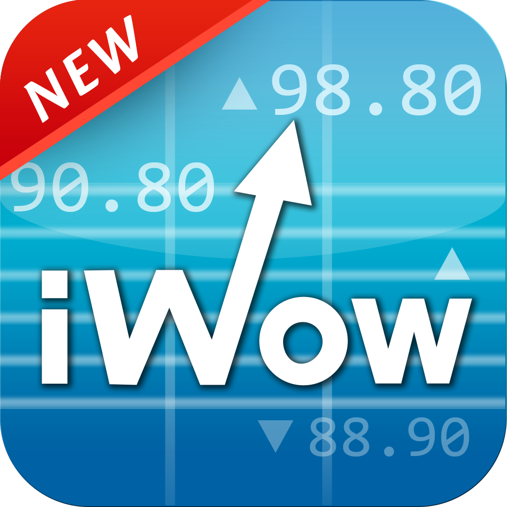
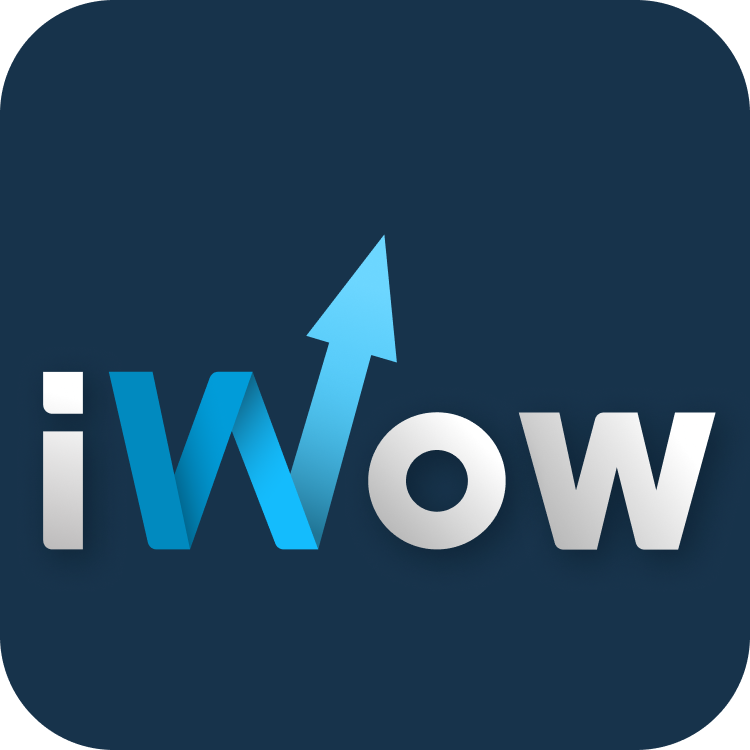
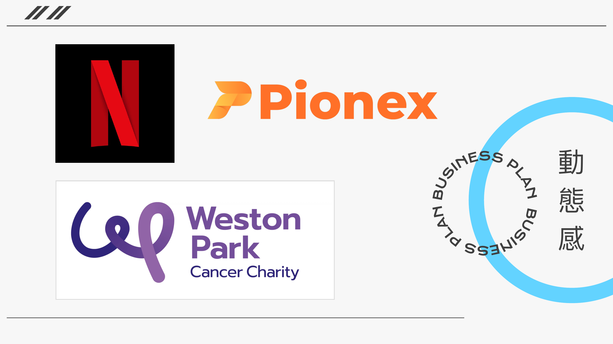
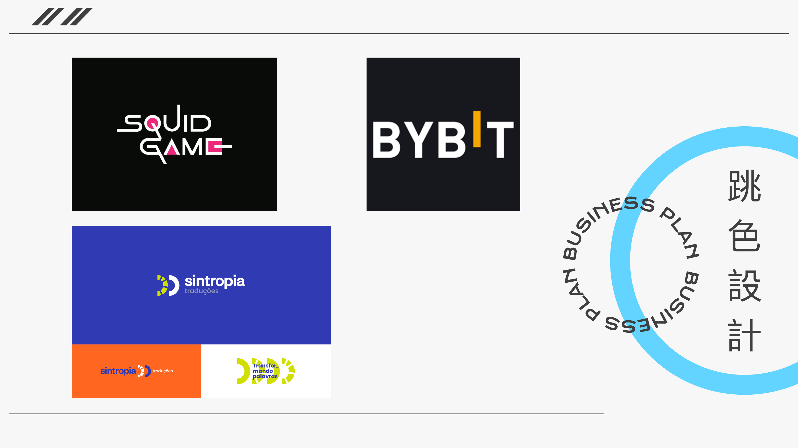
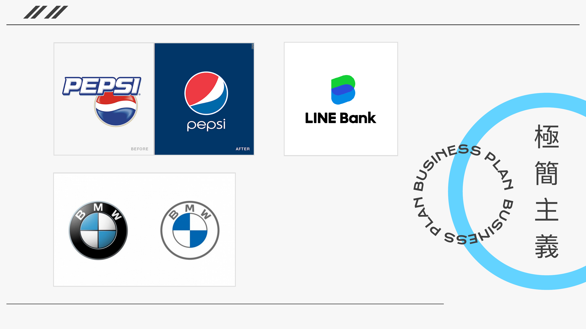
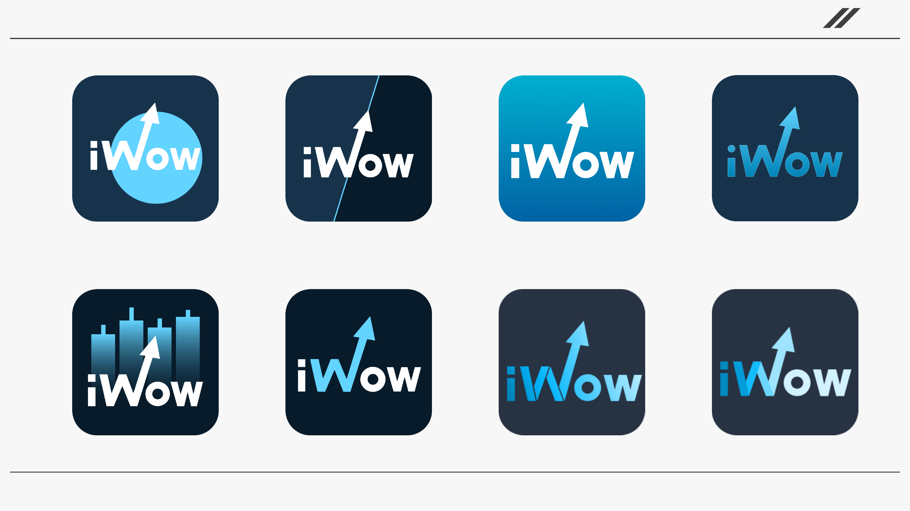
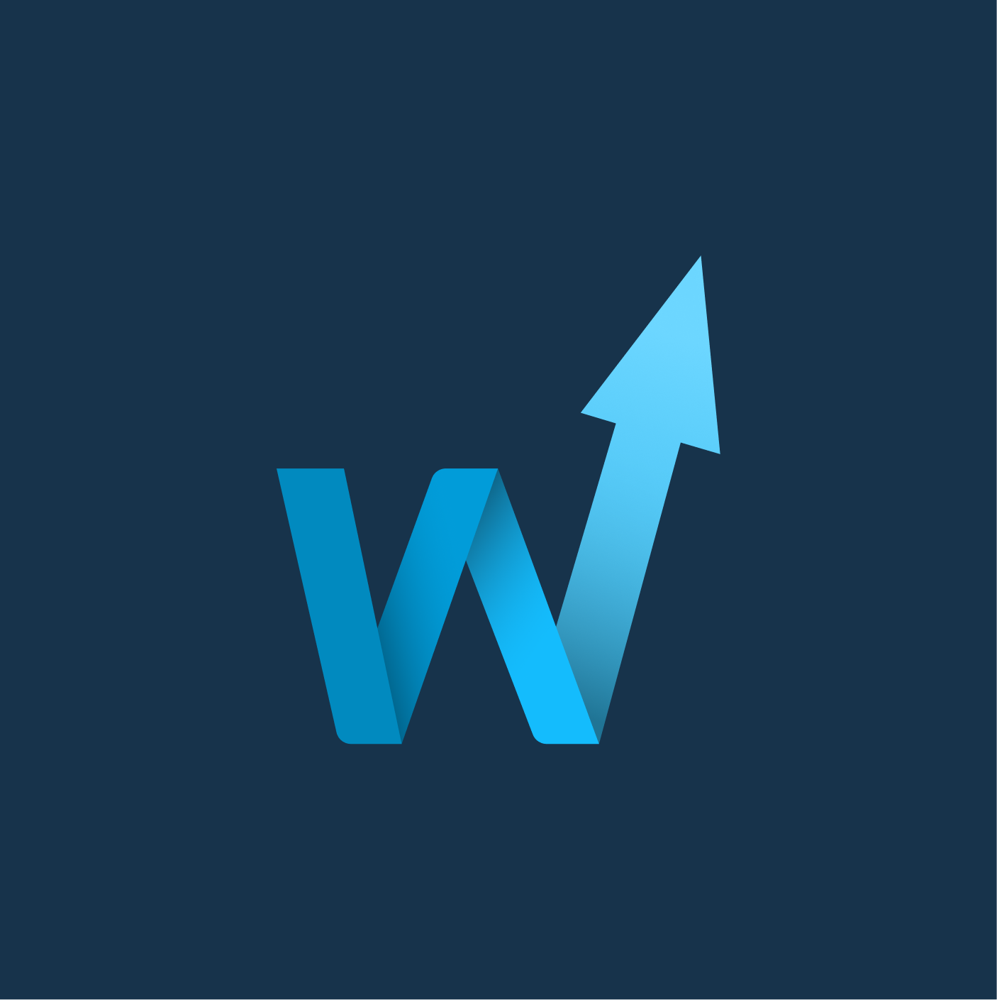
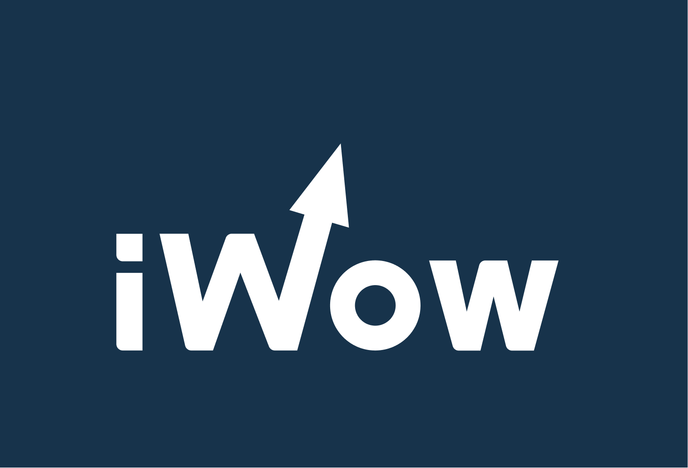
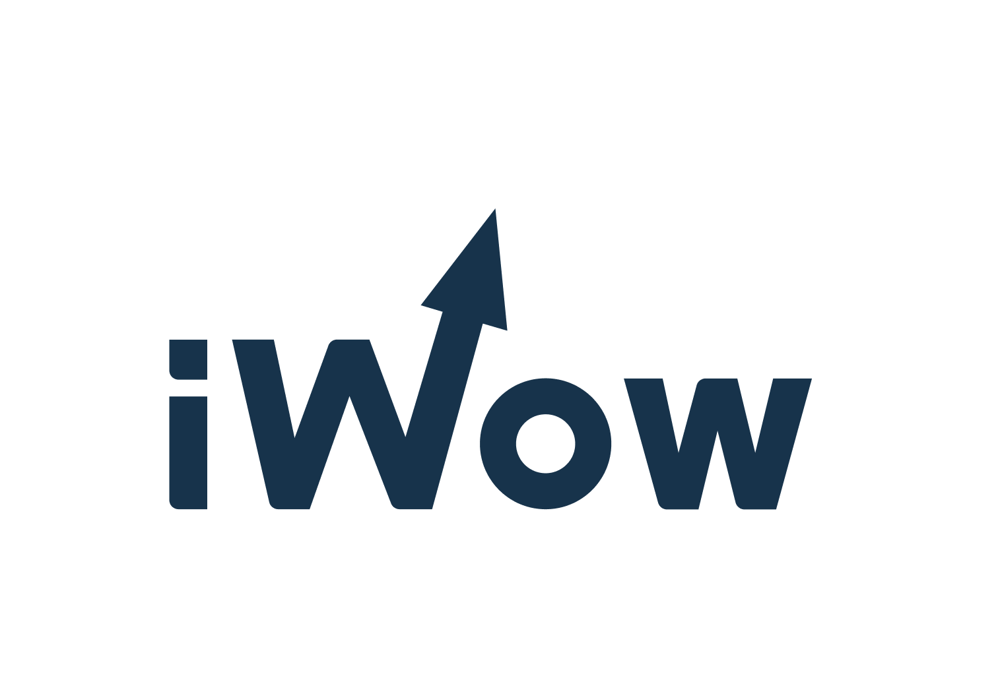
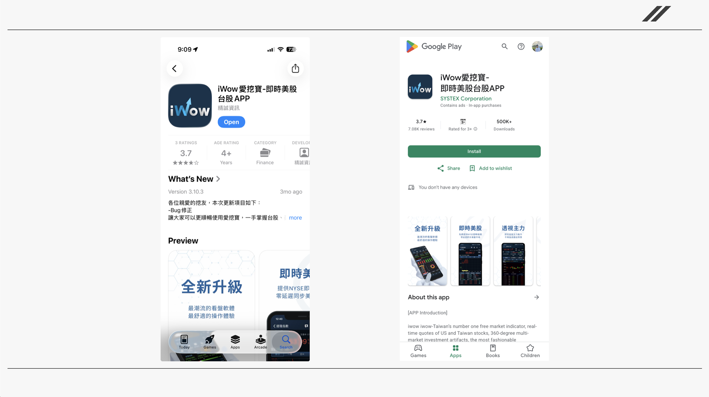

Case Study · Pure Design
Retiring a decade-old, skeuomorphic app icon and building a modern identity system for a stock-quote app used by 500,000+ investors
Summary
iWow, Systex's real-time stock-quote app, had grown past 500,000 users while still carrying an app icon designed nearly a decade earlier — a glossy, skeuomorphic mark with a stock-chart texture pressed into the background and a permanent red "NEW" ribbon. I led a full identity refresh: researching current design trends, exploring eight concept directions, and landing on a clean, dynamic W-arrow mark that shipped as the app's new icon and wordmark system across the App Store and Google Play.
Background & Challenge
iWow's original icon dated back to an earlier, more skeuomorphic era of app design — a glossy blue gradient, a stock-chart grid pressed into the background, and a red diagonal "NEW" ribbon that had long outlived its purpose. As the app grew past 500,000 users, that icon no longer matched either current design conventions or the more confident, modern brand iWow had become.
I framed the redesign around two goals: 注入新血 — injecting fresh visual energy into an aging brand — and 重新啟動 — treating the new icon as a relaunch moment for the product, not just a coat of paint.

Before — original icon

After — redesigned icon
Research & Direction
Before sketching anything, I looked at how other brands — inside and outside of fintech — were approaching identity design at the time, and grouped what I found into three directions worth testing against iWow's own mark.
Netflix, the crypto exchange Pionex, and Weston Park Cancer Charity all built movement into an otherwise static mark — through a diagonal cut, a folded ribbon, or a looping stroke. For an app built around live, moving market data, motion felt like the most relevant of the three trends.

Squid Game, Bybit, and Sintropia all leaned on a single saturated accent against a dark or neutral base, making the mark pop even at a small size — a useful reference given how small an app icon actually renders on a home screen.

Pepsi's flattened redesign, LINE Bank, and BMW's simplified emblem all showed the same move — stripping gradients and bevels back to flat shapes and fewer colors, trading surface detail for legibility at small sizes.

Concept Exploration
I sketched eight directions before converging on a single concept — from a circular badge and a diagonal navy split, to a bar-chart-integrated mark and a gradient app-icon square. The strongest direction kept reappearing in different forms: a capital W, drawn so its middle stroke doubled as an upward arrow — literally the shape of a rising chart, which is the entire reason anyone opens a stock-quote app in the first place.

Every version of the arrow-W was refined stroke by stroke — angle, weight, negative space — until it held up as cleanly at favicon size as it did full-screen.
The arrow reads immediately as growth and momentum, giving the brand a symbol strong enough to stand alone, without the wordmark, in tight spaces like a home-screen icon.
Flattened the gradients, removed the stock-chart texture, and retired the "NEW" ribbon for good — bringing the mark in line with the minimalism trend I'd researched.
The Final Identity
The same W-arrow, tuned for two contexts
The final app icon simplifies the arrow-W into a chrome-and-blue gradient on a rounded navy square, matching current app-icon conventions, while the standalone mark keeps the same geometry on a flat navy background for use inside the product itself.

Same identity, dark UI or light print
Because iWow appears everywhere from the app's dark-themed interface to printed marketing and partner co-branding, I built the wordmark as a true reversible pair — the same weight and spacing, just swapping which color carries the mark.


Outcome & Reflection
The redesigned icon and wordmark launched to production, replacing the decade-old mark across the App Store, Google Play, and inside the app itself.
Working within an existing 500,000-user product raised the bar in a different way than greenfield work: the new mark had to feel like an upgrade, not a rebrand users would need to re-learn — which is why legibility at a small size and consistency across contexts mattered as much as any single "clever" concept.

Grounded the redesign in three real identity trends before sketching a single concept
Built the mark as a reusable system — icon, wordmark, dark and light variants — not a single static image
Launched to 500,000+ existing users across the App Store and Google Play
Note — iWow is a Taiwanese product, so the trend-research slides and App Store screenshots throughout this case study remain in Traditional Chinese, their original language.